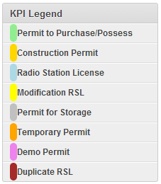
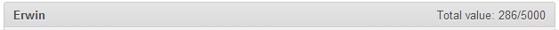
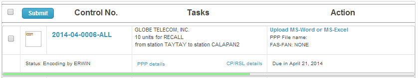
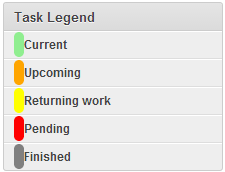

Permit to Purchase/Possess
This is a color light green progress bar located on the top most.
Construction Permit
This is a color gold progress bar located as the second top most.
Radio Station License
This is a color light blue progress bar located below Construction Permit bar.
Modification RSL
This is a color yellow progress bar located below RSL bar.
Permit for Storage
This is a color silver progress bar located below Modification RSL bar.
Temporary Permit
This is a color orange progress bar located below Permit for Storage.
Demo Permit
This is a color violet progress bar located below Permit for Temporary Permit.
Duplicate RSL
This is a color brown progress bar located below Permit for Demo Permit.
Note
Color Red progress bar means the application was processed beyond specified due date.
- Graph Title
Username - (e.g. Erwin) the progress report for this user.
Total value
dividend or numerator (e.g. 286) - the total number of units/stations processed so far.
divisor or denominator(e.g. 5000) - the user’s over-all KPI target for that year.
Control No
Each Applications contain unique number.
Status
- The current progress of the application.
- It is currently assign to whom.
Task
The task column contains essential information to distinctly identify the contents of each application.
Applicant name
Type of application
Number of units applied
Number of Station License applied
PPP details
- Information details for Permit to Purchase/Possess if already uploaded to the database.
- Clickable if the type of application falls within PPP and Storage.
CP/RSL details
- Information details for Construction Permit and Radio Station License if already uploaded to the database.
- Clickable if the type of application falls within CP and RSL.
Action
An upload button or select button for the users to finished the task.
This varies from the current progress of the application and user permission doing the task.
It also has links for uploaded file.
Due date can be seen in the lower right of the column.
- The application processing allotted time frame computed according to CSC Citizen Charter.
- Holidays and weekend are not included when counting processing time.
Progress Bar

- Bar indicator for application progress report.
Color coding
- Orange
indicates an incoming application task.
- Green
indicates currently processed by you.
- Yellow
indicates the application task will return to you.
- Red
indicates pending application according to the reason noted by the Engr.
- Gray
indicates the application has completed the process according to the Division work flow.
ID Task Secretary Encoder Engineer 1 Checking requirements 2 Issuance of SOA 3 Payment 4 Evaluation 5 Endorsement 6 Encoding 7 Review 8 Signature 9 Chief Signature 10 Director Signature 11 Cashier Stamp 12 Release to Secretariat
pass
{kind=link}
{kind=link}
{kind=link}
{kind=link}
{kind=link}
{kind=link}